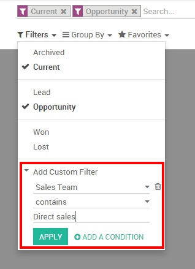

As a manager, you need to constantly monitor your team's performance in order to help you take accurate and relevant decisions for the company. Therefore, the Reporting section of Odoo Sales represents a very important tool that helps you get a better understanding of where your company's strengths, weaknesses and opportunities are, showing you trends and forecasts for key metrics such as the number of opportunities and their expected revenue over time , the close rate by team or the length of sales cycle for a given product or service.
Beyond these obvious tracking sales funnel metrics, there are some other KPIs that can be very valuable to your company when it comes to judging sales funnel success.
Review pipelines
You will have access to your sales funnel performance from the Sales module, by clicking on . By default, the report groups all your opportunities by stage (learn more on how to create and customize stage by reading Set up and organize your sales pipeline) and expected revenues for the current month. This report is perfect for the Sales Manager to periodically review the sales pipeline with the relevant sales teams. Simply by accessing this basic report, you can get a quick overview of your actual sales performance.
You can add a lot of extra data to your report by clicking on the measures icon, such as :
- Expected revenue.
- overpassed deadline.
- Delay to assign (the average time between lead creation and lead assignment).
- Delay to close (average time between lead assignment and close).
- the number of interactions per opportunity.
- etc.

Tip
By clicking on the + and - icons, you can drill up and down your report in order to change the way your information is displayed. For example, if I want to see the expected revenues of my Direct Sales team, I need to click on the + icon on the vertical axis then on Sales Team.
Depending on the data you want to highlight, you may need to display your reports in a more visual view. Odoo CRM allows you to transform your report in just a click thanks to 3 graph views : Pie Chart, Bar Chart and Line Chart. These views are accessible through the icons highlighted on the screenshot below.

Customize reports
You can easily customize your analysis reports depending on the KPIs (see Odoo CRM Terminologies) you want to access. To do so, use the Advanced search view located in the right hand side of your screen, by clicking on the magnifying glass icon at the end of the search bar button. This function allows you to highlight only selected data on your report. The filters option is very useful in order to display some categories of opportunities, while the Group by option improves the readability of your reports according to your needs. Note that you can filter and group by any existing field from your CRM, making your customization very flexible and powerful.
Tip
You can save and reuse any customized filter by clicking on Favorites from the Advanced search view and then on Save current search. The saved filter will then be accessible from the Favorites menu.
Here are a few examples of customized reports that you can use to monitor your sales' performances :
Evaluate the current pipeline of each of your salespeople
From your pipeline analysis report, make sure first that the Expected revenue option is selected under the Measures drop-down list. Then, use the + and - icons and add Salesperson and Stage to your vertical axis, and filter your desired salesperson. Then click on the graph view icon to display a visual representation of your salespeople by stage. This custom report allows you to easily overview the sales activities of your salespeople.

Forecast monthly revenue by sales team
In order to predict monthly revenue and to estimate the short-term performances of your teams, you need to play with two important metrics : the expected revenue and the expected closing.
From your pipeline analysis report, make sure first that the Expected revenue option is selected under the Measures drop-down list. Then click on the + icon from the vertical axis and select Sales team. Then, on the horizontal axis, click on the + icon and select Expected closing.

Tip
In order to keep your forecasts accurate and relevant, make sure your salespeople correctly set up the expected closing and the expected revenue for each one of their opportunities